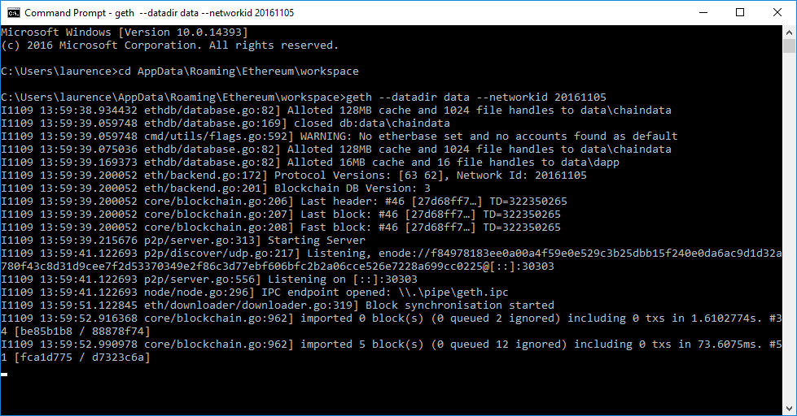

Install Software
You need to install 2 pieces of software:
Geth - this runs your node on the network
Mist - this acts as a wallet and dapp browser
Macosx
Windows
Geth
Follow the instructions here .
Download and install geth, and you can start it to check the install, but then close the application, because we need to start it with a special configuration to connect to a private network.
Mist
Download Mist or install from USB
Linux
Geth
Follow the instructions here
-
Mist
Download Mist or install from USB
Other Versions
All versions of the wallet and Mist can be downloaded here
Connecting to a private network
Synchronising with the live blockchain can take a long time, and to develop on that blockchain costs real Ether, therefore we will be using a private network.
Setup a workspace
Macosx
Download (or copy from USB) workspace into a suitable directory.
Open a terminal and run the following :
geth --datadir data --networkid 20161105 --ipcpath ~/Library/Ethereum/geth.ipc console
You should see something similar to the following
geth
Linux
Download (or copy from USB) workspace into a suitable directory.
Open a terminal and run the following :
geth --datadir data --networkid 20161105 --ipcpath ~/.ethereum/geth.ipc console
Windows
Download (or copy from USB) workspace into ~\AppData\Roaming\Ethereum
Open a command prompt, move to that directory and run the following :
geth --datadir data --networkid 20161105 console
Using Mist
Once you have geth running from the command line you can open Mist.